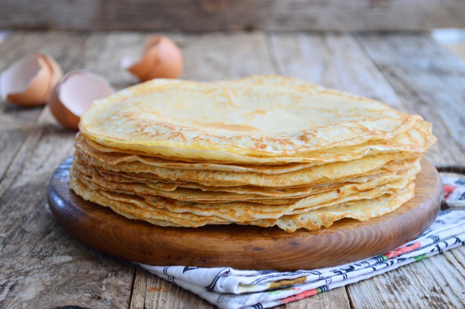

Beste stamppot
Bij Oma's Kost staat boerenkool stamppot op het menu als echte Hollandse klassieker. De boerenkool wordt gemengd met aardappelen tot een stevige stamppot en geserveerd met rookworst of spekjes. Het gerecht is warm, vullend en vooral populair in de winter.

Hutspot
Bij Oma's Kost is hutspot een traditioneel gerecht dat vaak wordt besteld. Het wordt gemaakt van aardappelen, wortels en uien die samen worden gekookt en daarna gestampt. Meestal wordt het geserveerd met een stuk vlees, zoals klapstuk of rookworst. Het is een stevige en warme maaltijd.

Pannenkoek
Bij Oma's Kost staan ook pannenkoeken op het menu. Ze worden vers gebakken en kunnen zowel zoet als hartig worden besteld. Denk aan pannenkoeken met stroop of poedersuiker, maar ook met spek of kaas. Het is een eenvoudig gerecht dat bij veel gasten in de smaak valt.